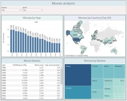

| PhD, | Photonics Engineering | Warsaw Univ. of Technology | |
|---|---|---|---|
| MSc., | Photonics Engineering | Warsaw Univ. of Technology |
| Excel at a job interview | Biblio (April 2024) | Excel certificate |
|---|
The course provides a solid look at utilizing Excel for data analysis, covering topics such as data transformations, filtering, sorting, XLOOKUP functions, and pivot tables/charts."
| Data analyst skill path | Udemy (March 2024) | DA certificate |
|---|
Comprehensive data analyst course encompassing Excel, SQL, and Python.
Throughout the duration of the course, I acquired a diverse set of skills and knowledge tailored to data analysis tasks.
In this module I refined my skills by organizing and manipulating data sets. I used data tools like: Pivot tables, XLOOKUP, Match, Filter, Sort, Data validation, Data import, Power query, and different types of charts for analysed data visualisation: Pivot charts, Bar charts, Scatter Plots, Histograms, Map charts, etc.
In this part I delved into both fundamental and advanced concepts. Starting with basic data operations devoted to table and data organization, I covered more advanced topics like subqueries, joins, data aggregation, and pattern matching, later on.
This segment of the course provided comprehensive knowledge from data acquisition to advanced analysis techniques.
I learned to extract, clean, preprocess, and visualise data using Python libraries (Pandas, NumPy, Seaborn). This included tasks such as data exploration,
univariate and bivariate analysis, outlier detection, missing value imputation, variable transformation, and correlation analysis.
I also learned:
| DA marathon with Tableau | GoIT (March 2024) | Tableau dashboard |
|---|
4-day marathon devoted to data analysis with Tableau.
Throughout the course, I acquired a comprehensive understanding of Tableau, encompassing its fundamental principles, organizational structure, and practical applications. I delved into various aspects, including its functionalities for crafting compelling visualizations, constructing dashboards, and leveraging essential tools such as filters, metrics, calculation fields, and custom formulas utilization.
Python |
| Data entry_job automation | Store scraped data in google sheets with Python. |
|---|---|
| Pomodoro technique | Time management method that helps focus on a subject. |
| Pong game | The famous game originally created in 1972. |
| Quiz game | Get 10 random questions from random categories and share you score on Twitter. |
| Snake game | Feed the hungry snake and let it grow! |
| Spotify playlist | Create a playlist in Spotify for the desired moment in time. |
| Turtle crossing game | Don't get the turtle to be run over by a car! |
| Movies_analysis | Oscar movies analysis based on data since 2001, created in Tableau. |
|---|---|
|  | |